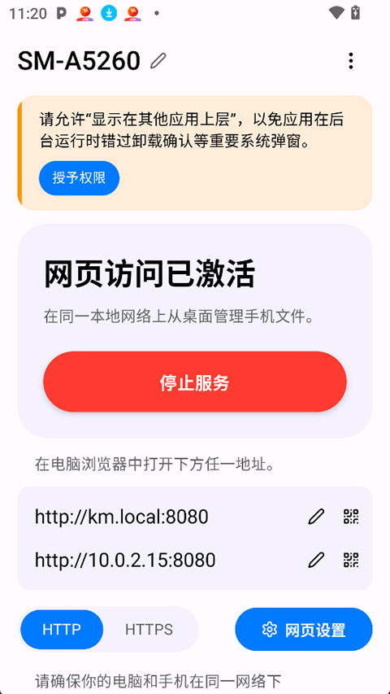

PlainApp付费账本：免费已够用，剩下那点值不值掏钱？
把PlainApp主产品和付费副线PlainCast的功能边界、替代方案、人群画像一笔算清楚，你三秒就能对号入座。
我花了两周把PlainApp从GitHub版换到Play版又换回GitHub版，最后还特地跑了一趟Google Play看那个叫PlainCast的付费副线——就想搞明白一件事：这玩意儿到底值不值得掏钱？第一次听说它是在某个小众论坛，去官网看了一眼就被功能列表吓了一跳——手机+浏览器联动、全程本地、免费为主，看起来什么都能做。但什么能让你掏钱、什么让你用免费版就够，这笔账得细细掰。
定价拆解：两层产品，三套版本
PlainApp这个名字底下其实藏着两层东西：一个是主产品PlainApp（免费为主），一个是付费副线PlainCast。而主产品本身又因为分发渠道不同被切成了三套版本，功能残缺程度直接决定了你"免费"到底能拿到什么。
PlainApp 主产品（免费）：
- GitHub直装版：功能全开——SMS消息面板、AI语义搜图、屏幕镜像+远程控制、DLNA投屏、App Manager、通知镜像、文件浏览器，一个都不缺。这是完整版，完全免费。想装完整版就得绕开应用商店，从官方下载拿到安装包。
- Google Play版：被商店策略阉割了SMS、App Manager、通知镜像（这三个功能的权限组合触发了Play的高风险扫描），但保留了AI搜图和DLNA。免费，但你少了最有价值的短信收发。
- F-Droid版：严格FOSS合规，去掉了AI搜图（依赖非开源库）。免费，隐私最干净，但没了AI找照片这个好用的功能。
PlainCast 副线产品（付费）：
- Google Play独占，Android 14+。核心功能是"平行窗口"——每个手机App在浏览器大屏上独立开一个窗口，可以并排排列，手机屏幕可以熄灭。这功能主产品PlainApp没有。价格档位我没在样本文档里看到具体数字，但定位是一次性买断还是订阅制都不影响核心决策：你要的就是"多App同时在大屏跑"这一件事。

把免费版和付费版的边界画清楚：免费版能覆盖90%以上的使用场景，付费版只在一个非常特定的需求上多出一个功能。这个比例我反复确认过——哪怕你是日均用两小时的主力用户，核心操作链里也找不到必须付费的环节。
算三笔账：你属于哪一类？
轻度用户：免费就是全部
你的使用场景大概是：偶尔想在电脑上发个短信（不想摸手机、不想被锁屏打断工作流）、偶尔投屏个视频到电视、翻手机照片时觉得按文件夹找太费劲想试试AI搜图。
这类人不需要花一分钱。直接装GitHub版PlainApp，SMS面板能发能收、AI搜图能帮你按"海边日落"找照片、DLNA一键投到电视上。手机和电脑连同一个Wi-Fi就完事了，没有注册、没有登录、没有云账号。
算时间账：原来你在电脑前工作时想起要发条短信——得摸手机、解锁、打字，来回切换大概30秒。用PlainApp浏览器端直接发，5秒搞定。一天发个三五条，一天省两三分钟，一年下来省十几个小时。这账已经赚了，而且是零成本赚的。
碰到不懂的参数设置？翻了翻PlainApp文档才搞明白SMS面板的双SIM切换怎么生效——哦对了，Play版是没这功能的，别装错版本。
主力用户：免费版够用，但时间账值得认真算
你每天都用PlainApp——早上起来在电脑上刷手机通知镜像、工作间隙用SMS面板发几十条短信、午休把手机屏幕投到电脑上远程划两下、下班前用AI搜图翻工作照片归档。
这类人还是不用花钱。但你得把"装对版本"这件事当回事——别稀里糊涂装了Play版然后抱怨发不了短信、别装了F-Droid版然后怀念AI搜图。就去GitHub下那个完整版，一次搞定。

时间账：主力用户一天在PlainApp上省的时间可能有十几分钟到半小时——原来的场景切换成本（电脑↔手机）被砍掉了。按一年算，这是几十个小时的净省。对比同类产品的定价：AirDroid要SMS功能得买付费版（年费大概几百块），Pushbullet更贵。PlainApp的免费版已经把它们付费版的功能全给你了。
但主力用户有一个隐性决策成本：维护成本。GitHub版不走应用商店更新，得自己盯着Release页。如果你特别怕麻烦、宁愿花钱买省心——那这才是你掏钱的理由，不是功能不够。
重度用户：掏钱的唯一理由
什么情况下你会考虑PlainCast？你得同时满足这几个条件：
- Android 14+（PlainCast的硬性系统要求）
- 你需要同时在大屏上跑多个手机App——比如一边在大屏上刷微信、一边开着手机地图导航、同时还在第三个窗口里放着文档扫描
- 你不想用scrcpy（那个免费的开源屏幕镜像工具，但只有命令行，没有浏览器端UI体验）
这就是PlainCast存在的全部理由：把"一个App投到大屏"升级成"多个App各占一个窗口并排跑"，手机还能熄灭。
如果这三点你都满足，那PlainCast的价格再贵也值——因为没有其他成熟的免费替代。但只要有一条不满足，你就不在它的目标用户里。
替代方案：不花钱的路有多少？
AirDroid / Pushbullet：这俩是市面上最像PlainApp的竞品。但AirDroid免费版不能发SMS（要付费版）、Pushbullet免费版限制短信条数。PlainApp的GitHub版在这一点上把它们全碾压了——免费就能发SMS，而且全程本地不经过第三方服务器。AirDroid的服务器中转意味着你的短信内容会过一遍他们的机器，PlainApp走的是局域网直连，连路由器都能配。
scrcpy：开源免费的Android屏幕镜像工具，纯命令行。功能上和PlainApp的屏幕镜像高度重叠，但没有浏览器端UI、没有SMS面板、没有AI搜图、没有文件管理。如果你是开发者、能接受命令行，scrcpy是完全免费的选择；但如果你想要一个开箱即用的图形化界面，还是PlainApp。
Google 生态自带：Android 11+ 有附近共享、Windows有Phone Link。但Phone Link的SMS功能有限制（部分运营商不支持彩信）、没有文件管理、没有AI搜图、投屏体验也不如DLNA。这些都是系统级基础功能，比不上专门工具的深度。
结论：对号入座三秒完成
✅ 闭眼用免费版：99%的人属于这一类。直接装GitHub完整版，所有核心功能全开，一分钱不用花。记住"GitHub版 = 完整版"这个口诀就行。
⚠️ 再等等看：主力用户如果你特别在意更新的便利性、或者实在嫌GitHub版麻烦，可以等等看PlainApp有没有计划上应用商店的完整版本（目前Play版被阉割是商店策略问题，不是开发者不想上）。
❌ 永远不用付：轻度用户、主力用户、不想用命令行但也不需要多窗口的用户——PlainCast对你来说就是个不存在的东西。
顺带提一句，PlainApp这套资料我也同步到了GitHub、Gitee 和 GitCode，国内网络环境下查阅和备份都方便。